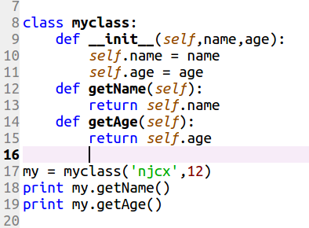
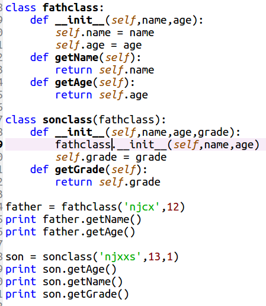
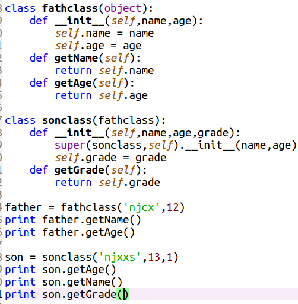

概述
- 面向过程编程
- 函数式编程
- 面向对象编程
现在，JAVA8 也加入了函数式编程了，现在我简要的记录一下Python的面向对象编程，以及Python面向对象编程时使用的黑魔法，尽管对于Python来说函数是一等公民，当开发大型可维护项目时，面向对象编程和设计模式还是很有必要的。
类
- 封装
- 继承
- 多态
Python有新式类和经典类之分，当然，这是对于Python2.x而言，对于Python3.x默认是新式类。对于Python2.x，继承object为新式类，没有继承object类则为经典类，其中，新式类支持用super(A,self).__init__()和A.__init__(self)调用父类构造方法，经典类仅支持用A.__init__(self)调用父类构造方法，Python支持可选参数类型，传参方式多样，函数重载就显得鸡肋了，所以Python正常情况下不支持函数重载。
- Python类的写法

- Python经典类

- Python新式类

Python由于历史原因导致多继承方法存在多样性，其中经典类是深度优先搜索方法，新式类是广度优先搜索。Python的多态和C# Java不同，Python崇尚“鸭子类型”。“当看到一只鸟走起来像鸭子、游泳起来像鸭子、叫起来也像鸭子，那么这只鸟就可以被称为鸭子。”我们并不关心对象是什么类型，到底是不是鸭子，只关心行为"。
#coding=utf-8
class Duck:
def quack(self):
print "Quaaaaaack!"
class Bird:
def quack(self):
print "bird imitate duck."
class Doge:
def quack(self):
print "doge imitate duck."
def in_the_forest(duck):
duck.quack()
duck = Duck()
bird = Bird()
doge = Doge()
for x in [duck, bird, doge]:
in_the_forest(x)
应用场景
-
多函数需使用共同的值，如：数据库的增、删、改、查操作都需要连接数据库字符串、主机名、用户名和密码
-
需要创建多个事物，每个事物属性个数相同，但是值的需求